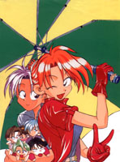
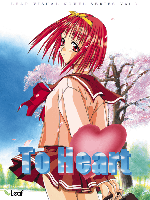
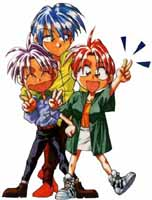

GMT Game's 이야기
GMT Game's의 주인장, '각성한 카나코짱' 인사드립니다. 꾸우벅~ (_ _)
이 홈페이지는 게임화되는 굿모닝티처를 중심으로 굿모닝티처 팬들끼리의 결속을 다지고
팬 문화를 활성화하기 위한 목적의
굿모닝 티처와 서영웅님의 팬페이지입니다.
아주 옛날 이야기...
|
 |
제가 중학교 때, 어떤 친구가 학교에 만화책을 몇 권 가져왔었습니다. 고등학교에 진학했습니다. |
그러던 사이에 영민이와 친구들은 일출고를 졸업하고 굿모닝 티처는 대단원의 막을 내렸지요.
그 후로 잠시 일출고를 잊고 사는 듯했으나,
또 얼마 안가 대학교에 진학하게 되었고...
대학에서 저는 또다른 혼란을, 주체할
수 없는 자유의 버거움을 느껴야만 했습니다.
그리고는... 예전에 별생각 없이 보고 잊어버렸던 '굿모닝 티처' 16권을 다시
보고 눈물을 쏟고 말았습니다.
|
대학 생활에도 익숙해져 갈 무렵.. 대학교 기숙사의 랜을 통해 유례없는 자유를 만끽하고 있던 저는 어느사이에 Leaf사의 작품들을 비롯한 미소녀 게임에 큰 관심을 가지게 되었더군요. 그러던 와중에 다시 잠깐 잊고 있던 '굿모닝 티처'가 고개를 들었습니다. 바로, '굿모닝 티처'의 게임화, 그것이었습니다. 우리의 학창시절에 알게 모르게 여러 가지 의미를 부여한 성공적인 스토리의 '굿모닝 티처', 그리고 우리나라의 To Heart와 같은 미소녀게임이 활성화되지 못해 있는 상황, 여기에서 저는 영감을 얻어 본격적으로 '굿모닝 티처'를 학원어드벤쳐 게임으로 하기 위한 기획에 착수했습니다. |
 |
미소녀게임에 심취해 있던 저는 이 기획의 효과를 여러 가지로 생각했습니다.
첫째는 캐릭터의 성비
문제였습니다. 모든 것이 미소녀 위주로 되어 이런 게임들에는 남성 캐릭터가 턱없이 부족합니다. 현실성을 크게 잃고 있지요.
그리고
둘째로는 게임들이 모두 주인공과 다른 여자 캐릭터와의 연애관계에 초점이 맞추어져 있는 것이었습니다.
셋째로는 상업적인 목적으로 인한 18금
장면이(속칭 H신) 난무한다는 것입니다.
저는 충실한 학교생활을 그려줄 수 있는 학원어드벤처의 출연을 원했습니다.
그리고 '굿모닝
티쳐'는 그 조건을 충족시켜 줄 만한 최상의 소재였던 것입니다.
이에 저는 2000년 5월부터 기획을 시작했습니다.
사실 게임제작에 흥미는 있었어도 할 줄은 거의 몰랐고,
또 이 작업을 위한 절대적인 그래픽 작업도
저는 완전한 문외한이었으니, 제가 할 수 있는 일이라고는 실질적인 소프트웨어의 그림을
그리는
것밖에 없었지요. 스토리, 캐릭터 설정, 게임진행 방식 등...
|
 |
그것들이 잘 완성되면 그때 실력있는 분들에게 도움을 청할 생각이었습니다. 그러나 그것은 저의 안일한 생각이었지요.. '굿모닝 티처'의 게임화에 열의를 보일 만한 그 만화에 열의를 보인 사람도 적었고 혼자서 모든 기획을 하는 것도 어려웠습니다. 결국 저는 2000년 11월, 'GMT 학원어드벤쳐 게임화 계획 본부' 라는 이름으로 홈페이지를 열었습니다. 이 홈페이지에 그동안 제가 기획한 내용들을 게시하며, |
이 뒷부분은, GMT World를 완성한 후에 완성시키겠습니다.